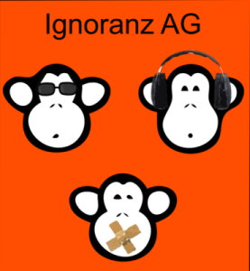
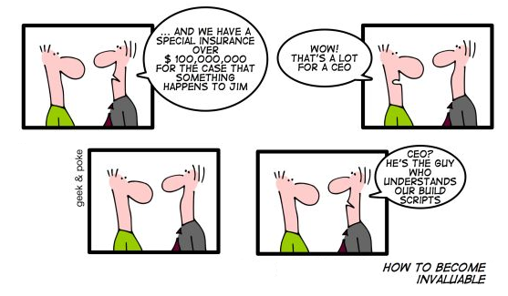

Amiről ma...
...szó lesz
|
...NEM lesz szó
|

Mi okozza?
- Kimaradt forrás fájl
- Kimaradt függőség
- Változott függőség (verzió)
- API változás
- Hiányzó beállítás - fájl, registry, környezeti változó
- ...
Amit el szeretnénk érni
- Tudjuk, ha baj van
- Minden le legyen dokumentálva (végrehajthatóan!!!), hogy kell
- fordítani (milyen programkönyvtárak kellenek hozzá?)
- tesztelni
- konfigurálni
- Minden automatizált ellenőrzés végre legyen hajtva, még ha a fejlesztő el is felejtené
- ...
Ahogy a CI ezeket megoldja (nightlyBuild++)
- figyeli a verziókezelőt, volt-e változás
- legfrissebb verzót kiszedi egy gépre
- végrehajtja az előre definiált lépéseket
- értesít az eredményekről
Előfeltételek
- Legyen verziókezelőnk
- Tudjunk parancssorból fordítani, tesztelni, stb.
- Sok kicsi commit
Hogy jól működjön

Hogy jól működjön II.

Wikimedia
{kind=link}
A CI sem csodafegyver
{kind=link}
Az egységteszten túl
[Jason] Gorman's Law of Software Design: Any aspect of software design that is not expressed in code does not exist.
Az egységteszten túl
component integration, code coverage, mutation testing, static code analysis, coding standards enforcement, document generation, multi platform build/verification, building on dependency source code change, build pipelines, continuous deployment, ....
Kérdések?

Geek & Poke